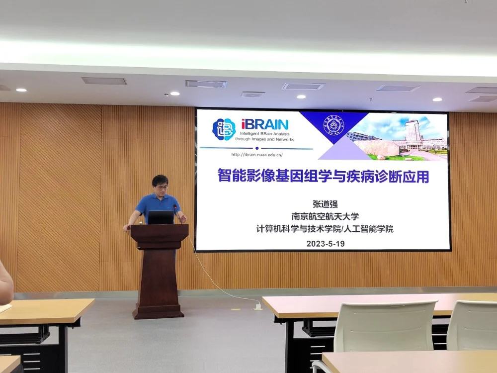
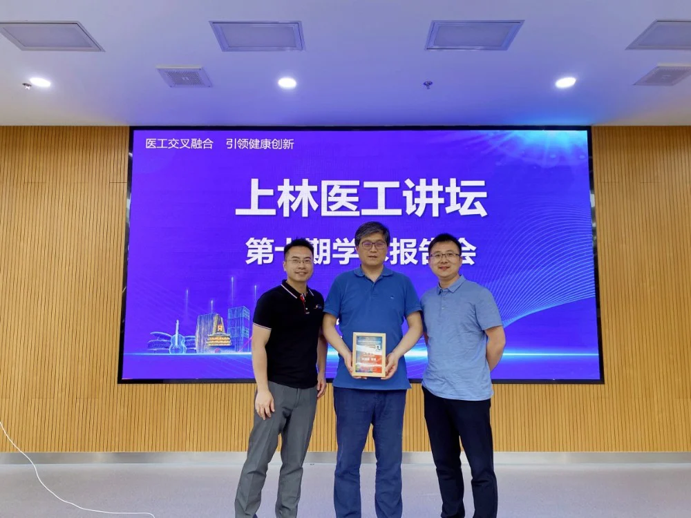

邀请嘉宾：
张道强 教授 南京航空航天大学
2023年5月19日，iMED团队邀请了张道强教授为同学们简要介绍近年来在影像基因组学及其疾病诊断应用方面的相关工作进展。本次分享会由iMED团队的赵一天研究员主持。
张道强教授来自南京航空航天大学，人工智能学院院长，入选国家级领军人才、国际模式识别学会会士(IAPR Fellow )，获国家自然科学基金优青和重点项目等资助。任IEEE TMI、Pattern Recognition、《自动化学报》等期刊编委。主要研究方向为人工智能，机器学习，医学图像分析脑机接口等，发表学术论文200余篇，被引15000余次。获国家自然科学二等奖1项、教育部自然科学一等奖和二等奖各1项。2014-2021连续8年入选EIsevier中国高被引学者榜。
张道强教授由智能医学影像对于疾病分析的重要性引入，先后为大家介绍了医学影像( MRI/CT)快速重建、多图谱医学影像分割、脑网络分析、多模态医学图像融合分类四个方面。
在医学影像重建方面，张教授为大家详细讲解了在重建过程中会面临的问题与挑战，并且分享了自己在相关方面的几个十分有意义的工作。在基于结构增强生成对抗网络的MRI重建工作中，基于MSE等指标难以度量图像结构信息的问题，设计了一个结构增强损失来刻画影像结构，完善了重建过程中图像的结构信息。在医学影像分割方面，张教授先是为大家介绍了几种研究方法的优缺点。比如基于端到端神经网络的分割方法虽然分割速度快，但是由于无解剖先验信息，影响最终的分割精度。出于这些方法的缺陷，张教授引入了基于解剖结构注意力深度网络的大脑MR图像分割、基于高阶特征学习的多图谱大脑MR图像分割等工作。传统的多图谱分割具有大多使用图像块灰度特征计算图像之间的相似性的缺点，而基于高阶特征学习的多图谱大脑MR图像分割就改善了这种问题带来的局限性。在脑网络分析方面，张教授向我们分享了基于超图的脑网络重建方法。该方法利用脑区之间复杂的高阶关系构建脑网络，并且提取高阶特征。这项工作可以有效提高MCI、ADHA分类精度和提取超边。在多模态影像融合的相关工作中，张教授分享了基于多核学习的多模态分类方法，使用多核学习融合MRI、PET、CSF三个模态的特征。在多模态三元组注意力网络中，提出了构造正负样本对组成三元组，使用自制力机制提取模态内在判别性信息等关键创新点。
分享结束后，同学们十分积极地向张教授请教自己的困惑。郝华颖同学就基于弦域结构损失的低剂量CT重建工作中的噪声去除原理部分发出疑问，马煜辉提出重建任务是否用于下游任务的问题，与张教授展开了亲切的交流。郝晋奎基于分割方法对于分类任务的提升与否问题，张教授表示一些工作中两者是同时进行的，并且为大家举例说明。
张教授的讲解与回答深入浅出，干货满满，让大家对自己所学的专业知识有了更深入的理解。感谢张教授带来的精彩讲解，也希望大家在以后的科研道路上攻坚克难！

